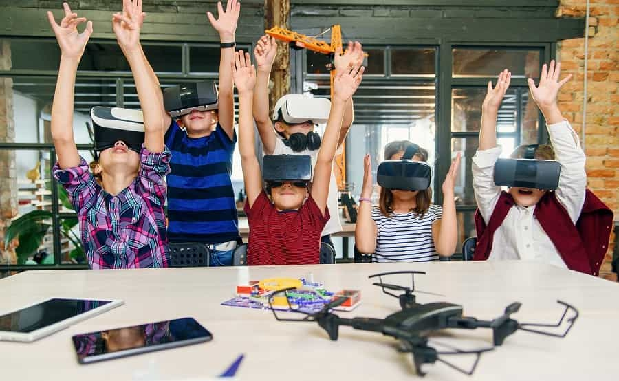
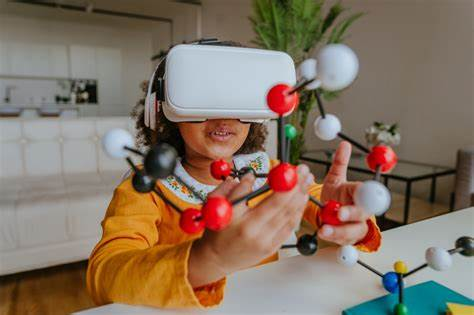
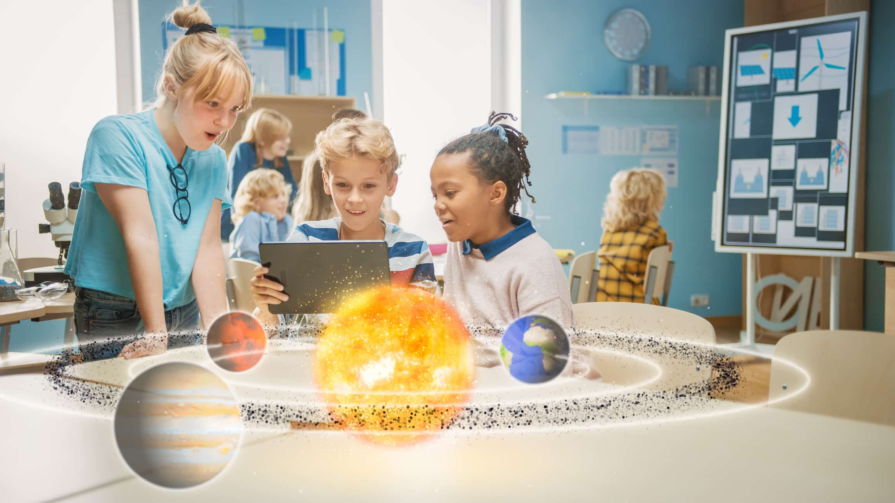

LAS NUEVAS TECNOLOGÍAS VS LA VIEJA ESCUELA
REALIDAD AUMENTADA
Hoy en día la tecnología ha avanzado a tal punto que muchos de nuestros quehaceres pueden ser hechos por ella sin esfuerzo, lo que nos ha abierto las puertas a miles de oportunidades que hace tan solo 30 años no habríamos podido disfrutar.
Unas de las tecnologias mas utililes e interesante es la realidad aumentada, la realidad aumentada se define como "la integración de elementos virtuales en una vista del mundo real" lo que permite proporcionar informacion adicional generando una mayor persepcion de la realidad.Esta tecnologia es relativamente nueva dando sus origenes en el año 1957 gracias a su creador Morton Heiling un cineasta y filosofo el cual desarollo el "sensorama" un dispositivo que ofrecia experiencia multisensoriales, proyectando imagenes en 3D.Pero no fue hasta el año 1990 cuando se definio por primera vez la realidad aumentada, Tom Caudell un investigador de Boeing buscaba soluciones innovadoras para mejorar la eficiencia en la produccion y la manufactura, y asi surgio el concepto de utilizar la tecnologia como guia virtual en tiempo real a los trabajadores.
La realidad aumentada en la actualidad tiene varias aplicaciones gracias a su versatilidad teniendo mayor uso en el ambito de la construccion, diseño grafico, medicina, entretenimiento y educacion.
EDUCACIÓN PARA NIÑOS CON DISCAPACIDAD COGNITIVA LEVE
Las habilidades logico matematicas siempre han sido de gran importancia en la sociedad en la que vivimos permitiendos desarollar capacidades de resolucion de problemas,comprension de conceptos abstractos razonamiento critico entre otras, asi ayudandonos dia a dia.Pero Cierto porcentaje de la ploblacion mundial tiene dificultades para el aprendisaje en la educacion.
Las discapacidades cognitivas leves son condiciones en las cuales las personas tiene algunas dificultades con las funciones cognitivas como el aprendisaje, la memoria, la resoluciones de problemas y relizacon de trabajos complejos.En la actualidad tenemos un gran problema en la educacion con niños con discapacidad cognitivas leves, ya que muchas veces la educacion no es capas de dar un sistema de aprendisaje adaptado para este tipo de estudiantes y sus requisitos de educacion.
Este problema es alarmente ya que puede llegar a afectar su vida cotidiana en la cual es necesaria tener un pensamiento logico matematico para la resolucion de problemas.
UNA CRÍTICA A LA EDUCACIÓN
Bogotá es una ciudad que brinda muy pocas herramientas interactivas para niños que tienen discapacidad cognitiva, donde su proceso de desarrollo intelectual se ve comprometido por los procesos educativos del país ya que no se le brinda las herramientas necesarias para su desarrollo cognitivo.” EDUREALIDAD” será una herramienta interactiva que se realizará por medio de realidad aumentada, y permitirá el desarrollo de habilidades en lógica matemática. Igualmente, permitirá el fortalecimiento de actividades y/o motoras permitiendo que los niños con discapacidad cognitiva leve o moderada para que tengan un mayor desarrollo cognitivo.
Se plantea que en Bogotá existen 458.088 personas con discapacidad donde el mayor número de personas se encuentra en Kennedy .
El estudio presenta otras cifras de importancia como la identificación de las localidades donde reside un mayor porcentaje de personas con discapacidad en Bogotá, que en su orden son Kennedy con un 14,37%; Engativá con un 12,34%; Suba con 11,67%; y Bosa con un 9,21%; San Cristóbal con un 6,72% y Ciudad Bolívar 6,67%. “(En Bogotá, Por Cada 100 Mil Habitantes Hay 6.379 Personas Con Discapacidad, 2020)
Se evidencia que aunque Bogotá ha buscado implementar diferentes herramientas como por ejemplo la que aplica la UNICEF que implementa una estrategia que tiene como enfoque de doble vía la cual plantea un apoyo hacia las reformas legales y políticas y además producción de diferentes herramientas que den apoyo visual.

En los colegios de la localidad se encuentran diferentes casos de niños con discapacidad donde estos muchas veces por recursos e ingresos no reciben la educación que los pueda ayudar a desarrollar aquellas habilidades necesarias para su proceso como persona. (Sokol, n.d.), este archivo.
Generando una búsqueda sobre los proyectos que se han llevado a cabo , no se evidencian proyectos que se hayan aplicado en bogotá, existe un reporte de un investigador colombiano Jesùs Vicente Castro Bonilla en el que habla sobre la Implementación de la Realidad Aumentada como Estrategia Didáctica en el Proceso de Aprendizaje de Estudiantes con Necesidades Educativas Especiales donde plantea .

El uso de la realidad aumentada en el aprendizaje de estudiantes con necesidades educativas especiales como síndrome de Down, espectro autista y dificultad motora, se fundamenta en la necesidad de ofrecer un enfoque educativo inclusivo y adaptado a las características individuales de cada estudiante. La realidad aumentada, como herramienta tecnológica innovadora, tiene el potencial de abordar desafíos que estos estudiantes enfrentan en su proceso de aprendizaje promoviendo un ambiente educativo accesible y efectivo, adaptando los contenidos temáticos de diversas áreas y niveles, mediando con las TIC el aprendizaje, desarrollo y adaptabilidad al trabajo colaborativo y el proceso de avance significativo dentro del aula. Mediante un enfoque cualitativo basado en un estudio de casos, se examinaron los efectos de la RA en la participación, comprensión y motivación de los estudiantes con NEE de los niveles de educación básica secundaria. Los avances revelan un impacto positivo en la interacción con el contenido educativo, la personalización del aprendizaje y la adquisición de habilidades prácticas. Para Agudelo (2004), la realidad aumentada, permite mostrar contenidos digitales en el ambiente real, mediado por el uso de dispositivos de representación específicos. Esta estrategia didáctica ha adquirido un mayor auge de uso en el aula por la viabilidad de integración de contenidos para la educación inclusiva, permitiendo complementar las temáticas e incluyendo a la totalidad de los estudiantes sin distinción y en beneficio de los estudiantes diagnosticados con NEE. (Realidad Aumentada Y Virtual En El Marco De La Discapacidad E Inclusión Desde Una Perspectiva Universitaria - Centro De Comunicación Y Pedagogía, n.d.)
Aunque en Bogotá no se encontraron otros proyectos en movimiento alrededor del mundo generan estudios como por ejemplo en la Facultad de Educación. Universidad Pontificia de Salamanca (UPSA) los estudiantes generan una investigación sobre cómo influye la realidad aumentada en el aprendizaje de las personas con discapacidad cognitiva en el cual los estudios evidencia que el uso de este tipo de herramientas dan la posibilidad de que las personas puedan vivir ciertas experiencias que resultan ser complicadas en el mundo real y así mismo fortaleciendo las habilidades como el pensamiento lógico matemático.
